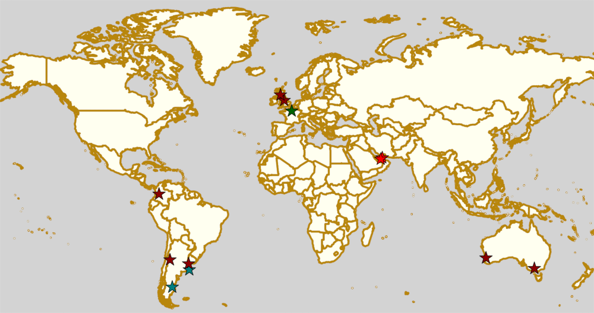
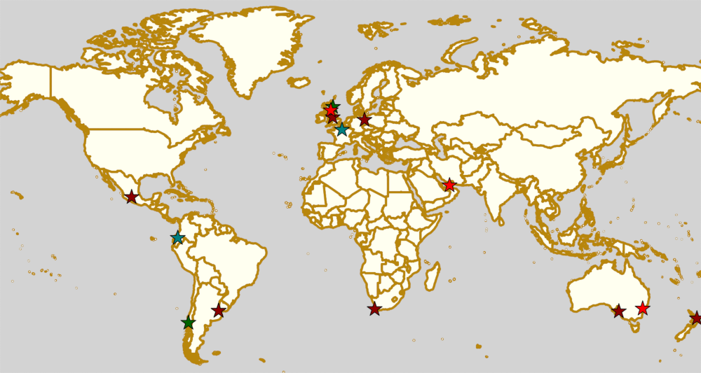
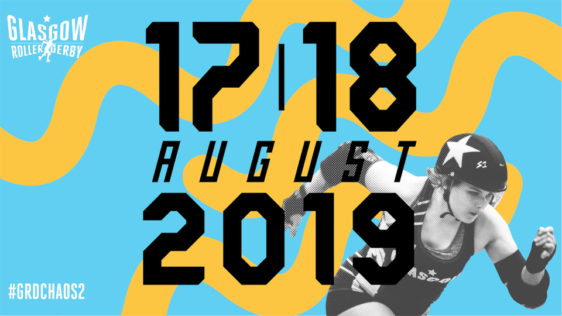
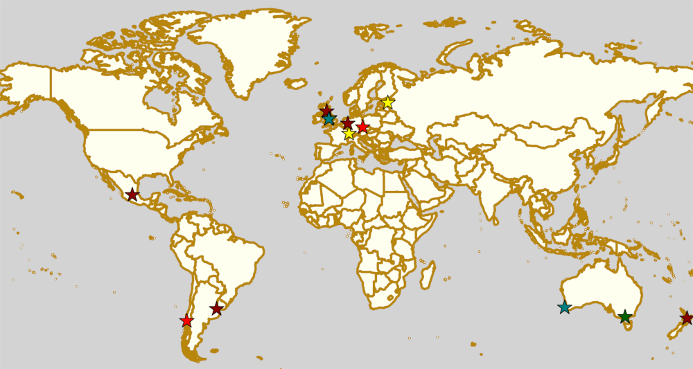

Weekend Highlights: 17 August 2019
The big highlight for this week in Scotland is obviously the return of Chaos on the Clyde in Glasgow; but we'd also like to call out Mendoza's first big (international) tournament, Gatorneo.
The rules are, as usual: highlights limited to 1 event per country, with an "extra" event allowed for a different kind of fixture (so, 1 tournament and 1 bootcamp), or if they involve Scottish leagues (since we are the Scottish Roller Derby Blog). Other notability might also allow the extra event - great posters, notable teams, etc. (League birthdays may count as "special" enough, at our discretion ;) )
We've bent the rules a bit this time, because it's important to highlight derby in regions which need more attention, and because it's quiet enough that we have the space. In this case, there's three Argentine events, because we really want to highlight how much exciting stuff is happening in Latin America right now.
In a bid to make this list as useful as possible, we've avoided links to Facebook except where noted. (Links to Teams are to non-Facebook resources - Instagram, or actual team pages - we'd strongly recommend that Teams get themselves an actual webpage [we can help host one if you need help]).
Locations are roughly organised East-West (with things before the weekend out sequence at the start).
Weekend Highlights: 10 August 2019
This is another "all weekend in one update" set of highlights, although again it's a very important weekend for a few regions. In particular: not one, but two Australian teams play in the first WFTDA Continental Cup of the season; and the first of two Playoffs for the Mexican National Tournament is held in Chihuahua over the weekend.
There's also some high level action in London; some international roller derby in Buenos Aires for the third weekend running; and a German Bundesliga D1 bout in Munich... plus a fantastic all weekend Bootcamp and officiating clinic in Malmö, Sweden.
The rules are, as usual: highlights limited to 1 event per country, with an "extra" event allowed for a different kind of fixture (so, 1 tournament and 1 bootcamp), or if they involve Scottish leagues (since we are the Scottish Roller Derby Blog). Other notability might also allow the extra event - great posters, notable teams, etc. (League birthdays may count as "special" enough, at our discretion ;) )
We've bent the rules a bit this time, because it's important to highlight derby in regions which need more attention, and because it's quiet enough that we have the space.
In a bid to make this list as useful as possible, we've avoided links to Facebook except where noted. (Links to Teams are to non-Facebook resources - Instagram, or actual team pages - we'd strongly recommend that Teams get themselves an actual webpage [we can help host one if you need help]).
Locations are roughly organised East-West (with things before the weekend out sequence at the start).

Weekend Highlights: 03 August 2019
This is another "all weekend in one update" set of highlights, although there are several exciting events this weekend: the first fixture of the Chilean national tournament, the Torneo X, in Valdivia; the MRDA Men's European Qualifiers in Aberdeen; and Argentina meet Uruguay in Buenos Aires, for one of Tempestad Roller Derby's first games (plus raising funds for 2x4 to attend in WFTDA Playoffs).
This article was edited on the 1st August to include late announced events in Dubai
The rules are, as usual: highlights limited to 1 event per country, with an "extra" event allowed for a different kind of fixture (so, 1 tournament and 1 bootcamp), or if they involve Scottish leagues (since we are the Scottish Roller Derby Blog). Other notability might also allow the extra event - great posters, notable teams, etc. (League birthdays may count as "special" enough, at our discretion ;) )
In a bid to make this list as useful as possible, we've avoided links to Facebook except where noted. (Links to Teams are to non-Facebook resources - Instagram, or actual team pages - we'd strongly recommend that Teams get themselves an actual webpage [we can help host one if you need help]).
Locations are roughly organised East-West (with things before the weekend out sequence at the start).
Chaos returns to Glasgow after 6 years.
Arguably one of the high points of roller derby in Glasgow was way back in August 2012, when Glasgow Roller Derby hosted their first tournament event, Chaos on the Clyde (FB , FTS , WEB ). (This was also around the time that the National Museum of Roller Derby was getting going, and so, as well as the international competition, the NMRD stall also helped to develop derby in different senses.)
Unfortunately, thanks to the venue used being closed not long after, and other suitable venues being inaccessible, it's been 6 years now until Glasgow Roller Derby have been able to bring back the event.
But, back it is, with Chaos on the Clyde 2 hosted in GRD's regular venue of the ARC in late August this year!
Read on for more:
Beijing's Dragon Bootcamp - the start of an annual tradition!
Roller Derby in China, and Asia in general (outside of Japan) has always been a widely dispersed community, with initiatives like the Pan-Asian Spring Rollers helping to tie the region together, and share resources sustainably. However, there've been relatively few big "all-day all-round" bootcamps in the region, and, in particular, little for the officiating side of the sport.
So, it was particularly exciting to hear that Beijing Roller Derby was hosting a 1-day multi-discipline bootcamp over the Dragon Boat Festival Weekend (8 June) this year. Skaters from all three Chinese-region leagues - Beijing, Shanghai and Hong Kong - were present, for the all day event.
We talked to a few of the attendees for feedback on the event, which included everything from Skate maintenance and "what is Roller Derby", all the way through drills, communication skills, and a final modified-Short Track rules scrimmage.
Read on for more:
Chilean National Championships 2019
Weekend Highlights: 27 July 2019
This is another single-update for the entire weekend - but that doesn't mean it's not exciting! We have a lot of derby happening across the world, including a three-day bootcamp in Estonia (covering WFTDA, Roller Derby Sevens and Short Track), and even more variant games in Australia, as South Sea Roller Derby host another Rainbow Lightning tournament (which is a ruleset we'd love to see people try in Europe sometime).
In Scotland, New Town Roller Derby host a Charity LGBT scrimmage, to support West Lothian Pride.
The rules are, as usual: highlights limited to 1 event per country, with an "extra" event allowed for a different kind of fixture (so, 1 tournament and 1 bootcamp), or if they involve Scottish leagues (since we are the Scottish Roller Derby Blog). Other notability might also allow the extra event - great posters, notable teams, etc. (League birthdays may count as "special" enough, at our discretion ;) )
In a bid to make this list as useful as possible, we've avoided links to Facebook except where noted. (Links to Teams are to non-Facebook resources - Instagram, or actual team pages - we'd strongly recommend that Teams get themselves an actual webpage [we can help host one if you need help]).
Locations are roughly organised East-West (with things before the weekend out sequence at the start).
Mexican National Championships 2019
Last year, as part of our series on National Tournaments around the World, we brought you up to date with Mexico's Championships and ratings - one of the longest running national tournaments in Roller Derby.
With the 2019 edition of the Championships arriving very soon now, we thought it was time to catch you up on events.
Last year, Mexico City Roller Derby held the #1 spot for the WFTDA-gender division, with Baja California's Baja Roller Derby coming a close second... can this year shake up the dominance of the Mexico City teams?
Mexico Division 1 (red) and Division 2 (yellow) teams for 2019.
Weekend Highlights: 20 July 2019
This weekend (and the week leading to it) is pretty dominated by the world's largest annual Roller Derby event, Rollercon. With people travelling across the world to attend, the schedule elsewhere is a little sparse, but there are still exciting things happening.
We've also included a bonus section in this week's roundup highlighting sessions at Rollercon itself which we think are either interesting, or important, or both.
This list was updated on Thursday 18th to include late announced bouts on Sunday in Mexico and Argentina
The rules are, as usual: highlights limited to 1 event per country, with an "extra" event allowed for a different kind of fixture (so, 1 tournament and 1 bootcamp), or if they involve Scottish leagues (since we are the Scottish Roller Derby Blog). Other notability might also allow the extra event - great posters, notable teams, etc. (League birthdays may count as "special" enough, at our discretion ;) )
In a bid to make this list as useful as possible, we've avoided links to Facebook except where noted. (Links to Teams are to non-Facebook resources - Instagram, or actual team pages - we'd strongly recommend that Teams get themselves an actual webpage [we can help host one if you need help]).
Locations are roughly organised East-West (with things before the weekend out sequence at the start).

WFTDA's Playoffs and Continental Cups - the costs for non-North Americans
In the last few days, the brackets and confirmed attendees for the WFTDA post-season events - WFTDA Division 1 Playoffs, and the WFTDA Continental Cups - have been announced. This year continues the trend of increasing "worldwide" participation of teams in the post-season - which also means increasing average costs for the sport!
Whilst we would like to congratulate all the teams on making Playoffs or CC, this article isn't just to celebrate them (even though we made a map to drive home the distribution)!
We thought that providing some hard-ish numbers on costs might be useful, so we did a bit of calculation to feed discussion. More after the break...
Our non-North-American teams for WFTDA Playoffs and Continental Cup, coloured by event.